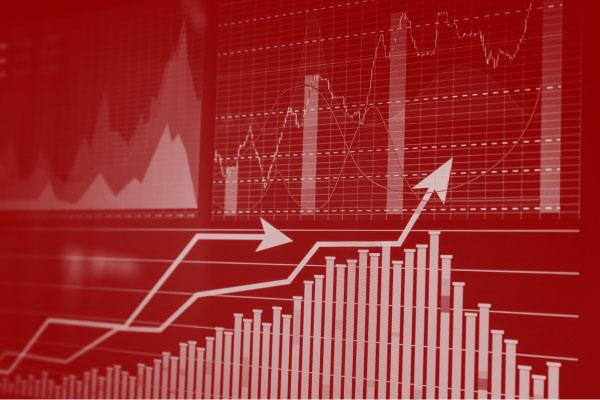
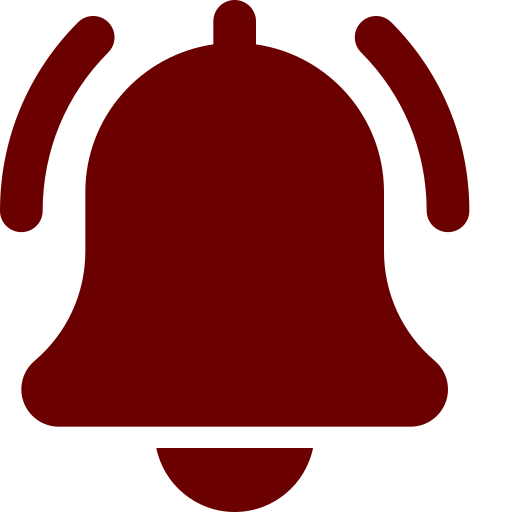
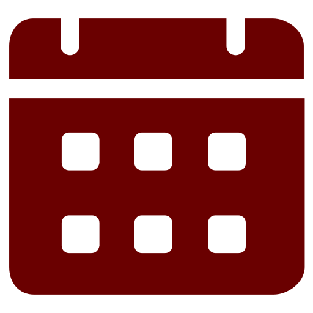

Monitoramento de Marcas: Proteção Contínua para seu Ativo
Após o registro, sua marca precisa de vigilância constante. Proteja-se contra usos indevidos e oposições.

Por que o Monitoramento é Crucial?
O registro de marca no INPI garante sua exclusividade, mas o trabalho não termina aí. O mercado está em constante movimento, e novas marcas são depositadas diariamente. Sem um monitoramento ativo, sua marca pode ser alvo de:
- Pedidos de registro semelhantes: Outras empresas podem tentar registrar marcas parecidas com a sua.
- Uso indevido: Terceiros podem usar sua marca sem autorização, diluindo sua força e reputação.
- Oposições e caducidades: Prazos e exigências do INPI que, se não cumpridos, podem levar à perda do seu registro.
O monitoramento da Nova Marca atua como um "vigia" constante, alertando-o sobre qualquer ameaça e permitindo que você tome as medidas necessárias para proteger seu patrimônioF.
Benefícios do Monitoramento Contínuo da Sua Marca

Alertas de Ameaças
Receba notificações sobre novos pedidos ou usos indevidos de marcas semelhantes.
Ação Rápida
Possibilidade de agir rapidamente com oposições ou notificações extrajudiciais.

Controle de Prazos
Gerenciamento de prazos do INPI para evitar a caducidade do seu registro.
Inteligência de Mercado
Acompanhe a movimentação de concorrentes e tendências do seu setor.
Suporte Especializado
Conte com nossa equipe para análises e tomadas de decisão estratégicas.
Como a Nova Marca Realiza sua Busca de Anterioridade
Vigilância Semanal
Acompanhamos a Revista da Propriedade Industrial (RPI) do INPI semanalmente.
Relatórios Personalizados
Enviamos relatórios claros sobre qualquer movimentação que afete sua marca.
Aconselhamento Jurídico
Orientamos sobre as melhores ações a serem tomadas em caso de ameaças.
Perguntas Frequentes sobre Monitoramento de Marcas
Não é obrigatório por lei, mas é altamente recomendado. Sem ele, você pode perder o prazo para se opor a um novo registro ou ser notificado de um uso indevido da sua marca.
Você corre o risco de ter sua marca copiada ou usada indevidamente sem seu conhecimento, podendo até mesmo perder o direito de uso se não agir a tempo.
Nosso foco principal é o INPI, mas também podemos oferecer monitoramento em outras plataformas e mídias, dependendo da sua necessidade.